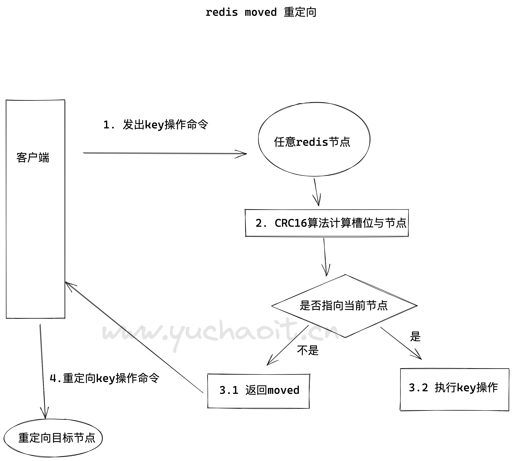
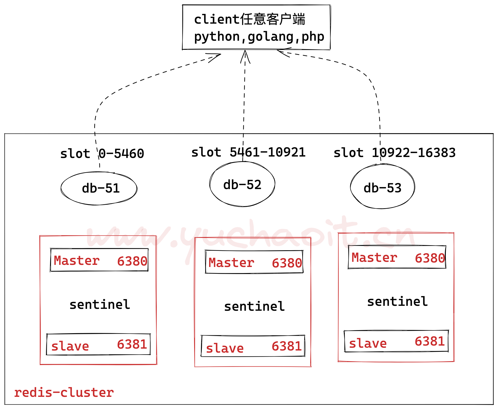
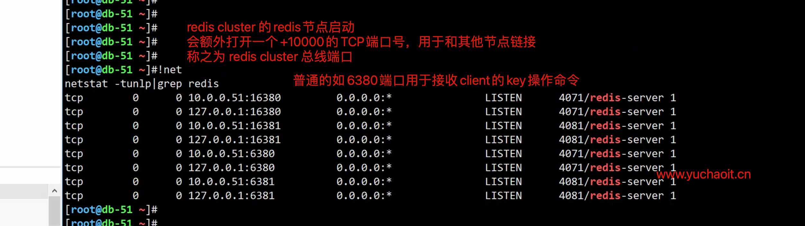
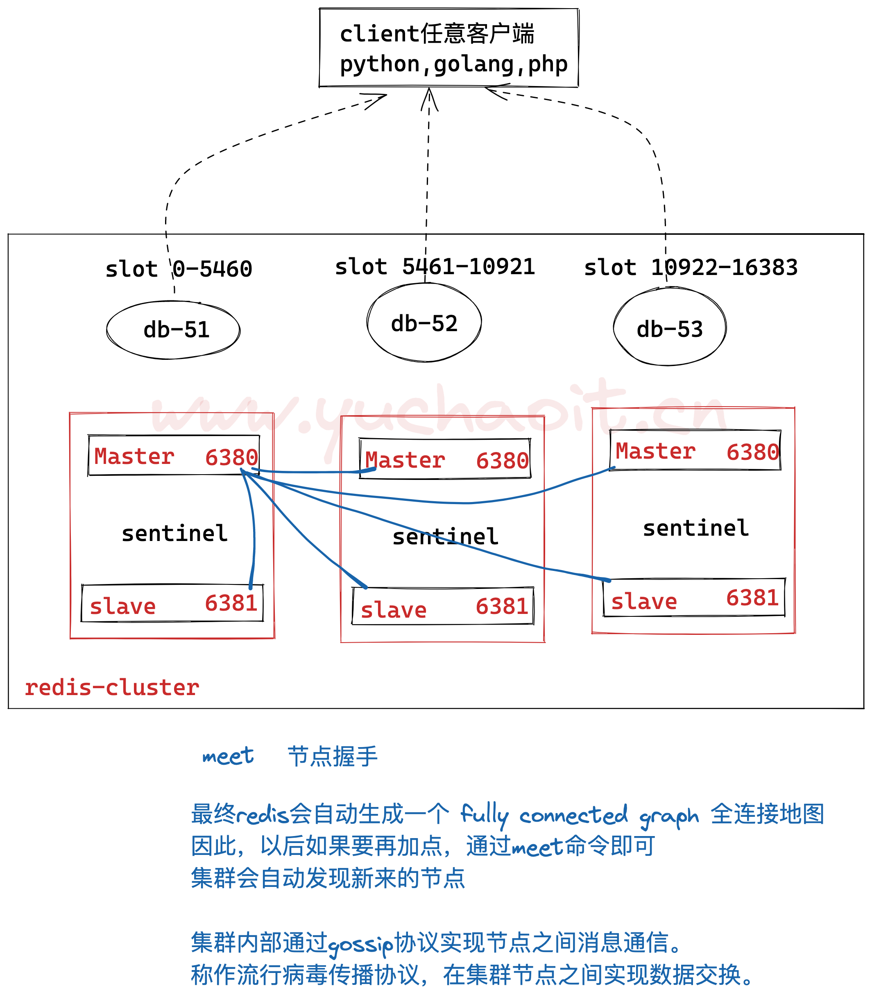
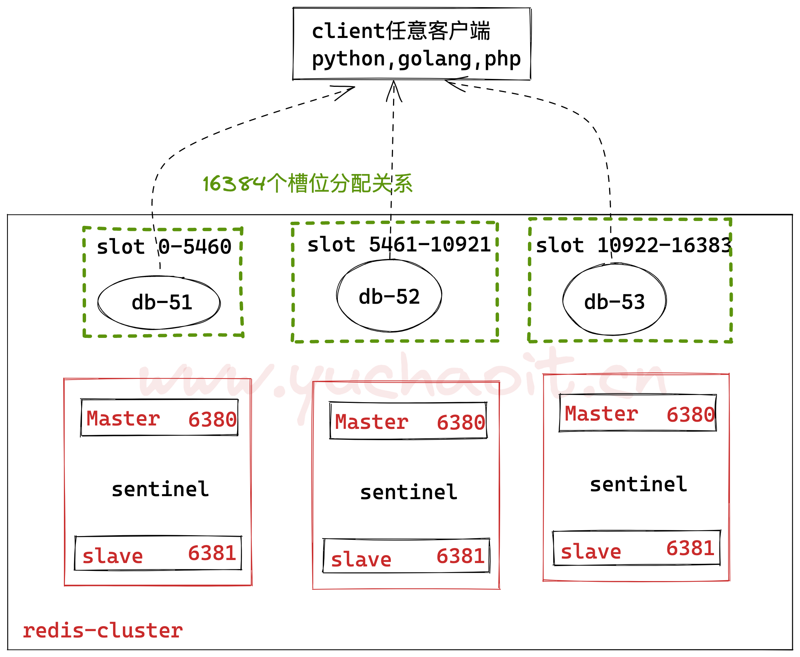
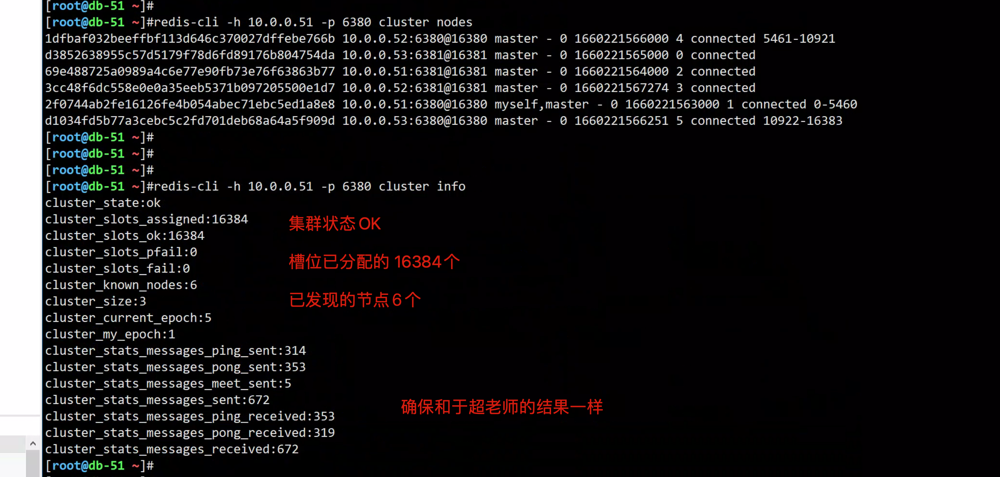
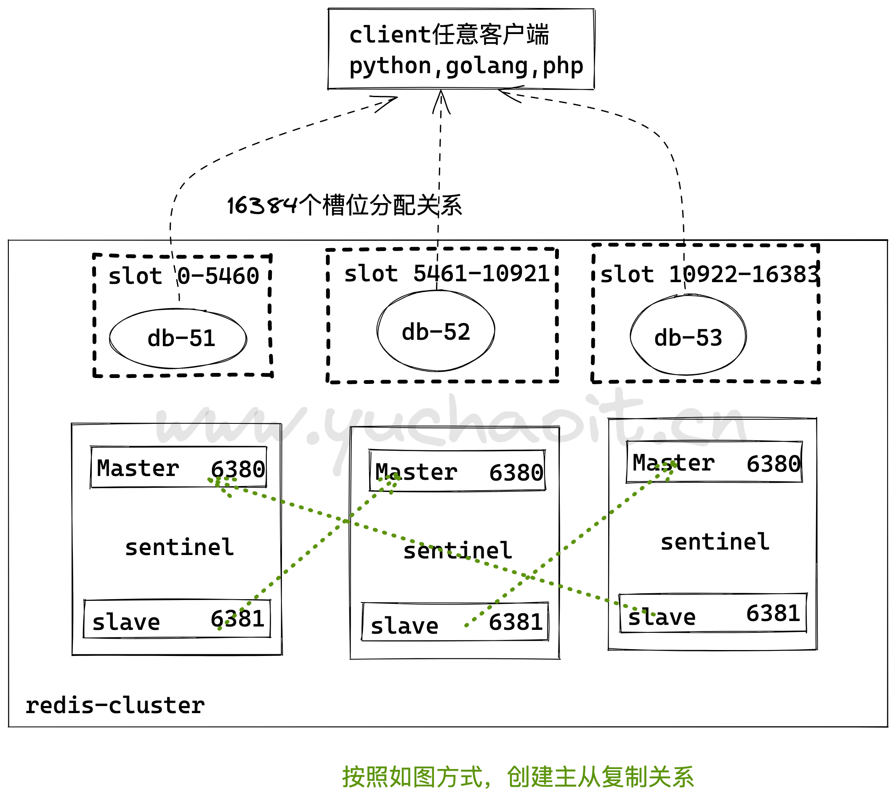
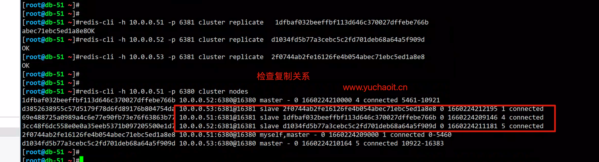

07-reids分片技术cluster篇
为什么学redis-cluster
前面两篇文章，主从复制和哨兵机制保障了高可用
就读写分离，而言虽然slave节点扩展了主从的读并发能力
但是写能力和存储能力是无法进行扩展，就只能是master节点能够承载的上限。
如果面对海量数据那么必然需要构建master（主节点分片)之间的集群
- 同时必然需要吸收高可用（主从复制和哨兵机制）能力，即每个master分片节点还需要有slave节点，这是分布式系统中典型的纵向扩展（集群的分片技术）的体现
redis-cluster 是服务器分片技术
官网资料
https://redis.io/topics/cluster-spec/#redis-cluster-goals
并发问题
redis官网给出的reids性能报告
https://redis.io/topics/benchmarks/
简单说是，如在8核16G内存的服务器下，redis可以实现10万/每秒的读写请求
当然具体还要看硬件配置，redis架构，参数等环境因素。
那如果像微博这样的，每秒写入100万个key咋办？
数据量问题
一个服务器正常内存再16G~256G，你现在有500G的redis数据存储，咋存？
拆开存呗！每个机器存一点。
新浪微博作为世界上最大的redis存储，就超过1TB的数据，去哪买这么大的内存条？
各大公司有自己的解决方案，推出各自的集群功能，核心思想都是将数据分片（sharding）存储在多个redis实例中，每一片就是一个redis实例。
各大企业集群方案：
twemproxy由Twitter开源
Codis由豌豆荚开发，基于GO和C开发
redis-cluster官方3.0版本后的集群方案
解决方案
1.买一个超级牛逼的计算机，1T内存，64核，但是，买几台合适？你老板同意花这钱吗？
2.正确应该是分布式啊，加机器，数据分散到不同的节点，集群多好啊。
Redis核心重要概念
# author by: www.yuchaoit.cn
1.redis集群通过哈希槽的概念，来决定key放在哪个槽里，并且只有16384（2的14次方个槽位）
2. 每一个key通过CRC16算法校验后决定放入哪个槽位。
3.redis集群中的每一个节点，负责一部分哈希槽（hash slot）
例如是三个redis节点，槽位分为例如是
- 节点A负责0~5500号 hash slot
- 节点B负责5501~11000号hash slot
- 节点C负责11001~16383号
为什么是16384个槽，作者的回复
https://github.com/redis/redis/issues/2576
4.槽位得正确分配，否则集群不可用
5. redis通过 hash tags功能，实现将多个相关的key，放到同一个hash slot中。
例如
key包含一个{字符
并且 如果在这个{的右面有一个}字符
并且 如果在{和}之间存在至少一个字符
- 简单说也就是，redis-cluster默认有16384个槽位，每个槽位里会自动通过算法，放入相似的key。
6.redis集群的每一个节点，都有唯一的名字，由十六进制的数字表示，一般基于/dev/urandom自动生成。
且节点在配置文件中保留ID，除非运维主动执行cluster reset hard或者hard reset节点。
可以使用redis-cli cluster nodes查看节点信息。
主要存储的信息是
node id, address:port, flags, last ping sent, last pong received, configuration epoch, link state, slots.
7.redis集群每一个节点都相互ping，建立了TCP连接，且保存活跃性，期望得到对方节点的pong回复。
8.请求重定向特性。
redis cluster采用去中心化的架构，集群的每一个节点都复制一部分槽位，客户端在写入key时，到底放到哪个槽位呢？
redis请求重定向
redis cluster采用去中心化的架构，集群的每一个节点都复制一部分槽位，客户端在写入key时，到底放到哪个槽位呢？
在cluster模式下，节点对请求的处理过程
1、检查当前key是否存在node
- 基于crc16算法/16384取模计算，得到slot槽位
- 查询负责该slot的节点
2、若slot不是自身，自动进行moved重定向
3、若slot是自身，且key在slot里，立即返回该key的结果
4、若key不在当前节点slot里，检查slot是否在migrating，数据迁移中
5、如果key正在迁移，返回ask错误给客户端
6、若slot未迁移，检查slot是否在导入中
7、若slot在导入中，且有asking标记，则直接操作
8、否则返回moved重定向。

cluster keyslot key-name # 查询key所在的槽
cluster slots # 查询槽位，节点的关系
集群环境规划
机器环境
db-51
db-52
db-53
master 主库 6380
slave 从库 6381

redis集群没有入口，任意一个节点都是连接集群的node节点，集群内部互相通信，基于ping-pong确认对方存活。
db-51主库操作
清空环境的命令
rm -rf /opt/redis_{6380,6381}/{conf,logs,pid}
rm -rf /data/redis_{6380,6381}
操作命令
1.确保可以免密3个节点
[root@db-51 ~]#for i in 52 53;do ssh root@10.0.0.$i 'hostname';done
db-52
db-53
2.创建数据目录
mkdir -p /opt/redis_{6380,6381}/{conf,logs,pid}
mkdir -p /data/redis_{6380,6381}
3.主节点配置文件
# 细节坑，ip不能走内网127
cat >/opt/redis_6380/conf/redis_6380.conf <<'EOF'
daemonize yes
bind 10.0.0.51
port 6380
pidfile /opt/redis_6380/pid/redis_6380.pid
logfile /opt/redis_6380/logs/redis_6380.log
dbfilename www.yuchaoit.cn_redis_6380.rdb
appendonly yes
appendfilename "www.yuchaoit.cn_appendonly.aof"
dir /data/redis_6380/
appendfsync everysec
cluster-enabled yes
cluster-config-file nodes_6380.conf
cluster-node-timeout 15000
EOF
4.复制master节点的配置文件到slave节点且修改端口
cp /opt/redis_6380/conf/redis_6380.conf /opt/redis_6381/conf/redis_6381.conf
sed -i 's/6380/6381/g' /opt/redis_6381/conf/redis_6381.conf
# 5.授权
chown -R redis.redis /opt/redis*
chown -R redis.redis /data/redis*
6.生成服务脚本
cat >/usr/lib/systemd/system/redis-master.service <<EOF
[Unit]
Description=Redis service by www.yuchaoit.cn
After=network.target
After=network-online.target
Wants=network-online.target
[Service]
ExecStart=/usr/local/bin/redis-server /opt/redis_6380/conf/redis_6380.conf --supervised systemd
ExecStop=/usr/local/bin/redis-cli -h $(ifconfig ens33|awk 'NR==2{print $2}') -p 6380 shutdown
Type=notify
User=redis
Group=redis
RuntimeDirectory=redis
RuntimeDirectoryMode=0755
[Install]
WantedBy=multi-user.target
EOF
7.复制生成slave节点脚本
cp /usr/lib/systemd/system/redis-master.service /usr/lib/systemd/system/redis-slave.service
sed -i 's/6380/6381/g' /usr/lib/systemd/system/redis-slave.service
# 8.启动master、slave节点
systemctl daemon-reload
systemctl restart redis-master
systemctl restart redis-slave
9.检查m，s
[root@db-51 /data/redis_6380]#ps -ef|grep redis
redis 4858 1 0 20:00 ? 00:00:00 /usr/local/bin/redis-server 10.0.0.51:6380 [cluster]
redis 4868 1 0 20:00 ? 00:00:00 /usr/local/bin/redis-server 10.0.0.51:6381 [cluster]
root 4873 3706 0 20:00 pts/0 00:00:00 grep --color=auto redis
10.吧创建好的数据，发送给其他节点，或者手工部署均可
[root@db-51 ~]#rsync -avz /opt/redis_638* 10.0.0.52:/opt/
[root@db-51 ~]#rsync -avz /opt/redis_638* 10.0.0.53:/opt/
[root@db-51 ~]#rsync -avz /usr/lib/systemd/system/redis-*.service 10.0.0.52:/usr/lib/systemd/system/
[root@db-51 ~]#rsync -avz /usr/lib/systemd/system/redis-*.service 10.0.0.53:/usr/lib/systemd/system/

db-52操作
1.修改配置文件的ip
[root@db-52 ~]#pkill redis
[root@db-52 ~]#find /opt/redis_638* -type f -name '*.conf' | xargs sed -i '/bind/s#51#52#g'
[root@db-52 ~]#sed -i 's#51#52#g' /usr/lib/systemd/system/redis-*.service
2.创建数据目录
mkdir -p /data/redis_{6380,6381}
chown -R redis.redis /opt/redis_*
chown -R redis.redis /data/redis_*
3.启动
systemctl daemon-reload
systemctl start redis-master
systemctl start redis-slave
4.检查
[root@db-52 ~]#ps -ef|grep redis
redis 2745 1 0 20:32 ? 00:00:00 /usr/local/bin/redis-server 10.0.0.52:6380 [cluster]
redis 2755 1 0 20:32 ? 00:00:00 /usr/local/bin/redis-server 10.0.0.52:6381 [cluster]
db-53操作
cat > init_redis_node.sh <<'EOF'
# author by : www.yuchaoit.cn
find /opt/redis_638* -type f -name '*.conf' | xargs sed -i '/bind/s#51#53#g'
sed -i 's#51#53#g' /usr/lib/systemd/system/redis-*.service
mkdir -p /data/redis_{6380,6381}
chown -R redis.redis /opt/redis_*
chown -R redis.redis /data/redis_*
systemctl daemon-reload
systemctl start redis-master
systemctl start redis-slave
ps -ef|grep redis
EOF
[root@db-53 ~]#
[root@db-53 ~]#bash init_redis_node.sh
root 2600 2545 0 20:33 pts/1 00:00:00 bash init_redis_node.sh
redis 2632 1 0 20:33 ? 00:00:00 /usr/local/bin/redis-server 10.0.0.53:6380 [cluster]
redis 2642 1 0 20:33 ? 00:00:00 /usr/local/bin/redis-server 10.0.0.53:6381 [cluster]
root 2644 2600 0 20:33 pts/1 00:00:00 grep redis
集群手动发现节点
至此redis环境就准备好了，可以创建redis集群了，俩方案
- 有自动化创建脚本
- 手动创建集群，分配槽位
# 节点握手
# 一个meet消息，就像ping命令，且会强制接受者作为集群的一个节点
redis-cli -h 10.0.0.51 -p 6380 cluster meet 10.0.0.52 6380
redis-cli -h 10.0.0.51 -p 6380 cluster meet 10.0.0.53 6380
redis-cli -h 10.0.0.51 -p 6380 cluster meet 10.0.0.51 6381
redis-cli -h 10.0.0.51 -p 6380 cluster meet 10.0.0.52 6381
redis-cli -h 10.0.0.51 -p 6380 cluster meet 10.0.0.53 6381
# 查看redis集群节点
[root@db-51 ~]#redis-cli -h 10.0.0.51 -p 6380 cluster nodes
1dfbaf032beeffbf113d646c370027dffebe766b 10.0.0.52:6380@16380 master - 0 1660221270732 4 connected
d3852638955c57d5179f78d6fd89176b804754da 10.0.0.53:6381@16381 master - 0 1660221269000 0 connected
69e488725a0989a4c6e77e90fb73e76f63863b77 10.0.0.51:6381@16381 master - 0 1660221270000 2 connected
3cc48f6dc558e0e0a35eeb5371b097205500e1d7 10.0.0.52:6381@16381 master - 0 1660221271752 3 connected
2f0744ab2fe16126fe4b054abec71ebc5ed1a8e8 10.0.0.51:6380@16380 myself,master - 0 1660221272000 1 connected
d1034fd5b77a3cebc5c2fd701deb68a64a5f909d 10.0.0.53:6380@16380 master - 0 1660221272772 5 connected
图解基于gossip协议的节点发现

gossip协议有几种集群通信类型
- meet类型，cluster meet ip port，已有的集群节点会向新的节点发送邀请，加入集群
- ping类型，节点每秒向其他节点发送ping消息，消息中带有已知节点的地址、槽、状态信息、以及最后一次被访问的信息。
- pong，节点收到ping消息给与pong回复，消息中也携带自己已知的节点信息。
- fail，节点ping不通后，向集群所有节点广播，告诉该节点挂了，其他节点收到消息后均标记该down节点下线。
集群手动分配槽位

# 根据于超老师所绘图，创建槽位
redis-cli -h 10.0.0.51 -p 6380 cluster addslots {0..5460}
redis-cli -h 10.0.0.52 -p 6380 cluster addslots {5461..10921}
redis-cli -h 10.0.0.53 -p 6380 cluster addslots {10922..16383}
# 查看集群节点状态
redis-cli -h 10.0.0.51 -p 6380 cluster nodes
redis-cli -h 10.0.0.51 -p 6380 cluster info
集群结果如图
集群已创建，还差创建节点的主从复制。

redis-cluster命令整理
集群
cluster info ：打印集群的信息
cluster nodes ：列出集群当前已知的所有节点（ node），以及这些节点的相关信息。
节点
cluster meet <ip> <port> ：将 ip 和 port 所指定的节点添加到集群当中，让它成为集群的一份子。
cluster forget <node_id> ：从集群中移除 node_id 指定的节点。
cluster replicate <master_node_id> ：将当前从节点设置为 node_id 指定的master节点的slave节点。只能针对slave节点操作。
cluster saveconfig ：将节点的配置文件保存到硬盘里面。
槽(slot)
cluster addslots <slot> [slot ...] ：将一个或多个槽（ slot）指派（ assign）给当前节点。
cluster delslots <slot> [slot ...] ：移除一个或多个槽对当前节点的指派。
cluster flushslots ：移除指派给当前节点的所有槽，让当前节点变成一个没有指派任何槽的节点。
cluster setslot <slot> node <node_id> ：将槽 slot 指派给 node_id 指定的节点，如果槽已经指派给
另一个节点，那么先让另一个节点删除该槽>，然后再进行指派。
cluster setslot <slot> migrating <node_id> ：将本节点的槽 slot 迁移到 node_id 指定的节点中。
cluster setslot <slot> importing <node_id> ：从 node_id 指定的节点中导入槽 slot 到本节点。
cluster setslot <slot> stable ：取消对槽 slot 的导入（ import）或者迁移（ migrate）。
键
cluster keyslot <key> ：计算键 key 应该被放置在哪个槽上。
cluster countkeysinslot <slot> ：返回槽 slot 目前包含的键值对数量。
cluster getkeysinslot <slot> <count> ：返回 count 个 slot 槽中的键 。
手工添加复制关系
给slave添加
redis-cli -h 10.0.0.51 -p 6381 cluster replicate db-52的6380的id
redis-cli -h 10.0.0.52 -p 6381 cluster replicate db-53的6380的id
redis-cli -h 10.0.0.53 -p 6381 cluster replicate db-51的6380的id
redis-cli -h 10.0.0.51 -p 6381 cluster replicate 1dfbaf032beeffbf113d646c370027dffebe766b
redis-cli -h 10.0.0.52 -p 6381 cluster replicate d1034fd5b77a3cebc5c2fd701deb68a64a5f909d
redis-cli -h 10.0.0.53 -p 6381 cluster replicate 2f0744ab2fe16126fe4b054abec71ebc5ed1a8e8


最后，测试集群写入数据
[root@db-51 ~]#redis-cli -c -h 10.0.0.51 -p 6380
10.0.0.51:6380> set name www.yuchaoit.cn
-> Redirected to slot [5798] located at 10.0.0.52:6380
OK
10.0.0.52:6380>
自动重定向到了 52节点
10.0.0.52:6380> keys *
1) "name"
10.0.0.52:6380> get name
"www.yuchaoit.cn"
# 继续写入多个key
10.0.0.52:6380>
10.0.0.52:6380> set k1 v1
-> Redirected to slot [12706] located at 10.0.0.53:6380
OK
10.0.0.53:6380> set k2 v2
-> Redirected to slot [449] located at 10.0.0.51:6380
OK
10.0.0.51:6380> set k3 v3
OK
10.0.0.51:6380>
总结集群key操作
1. redis集群操作，必须加入-c参数，开启集群操作
2. 自动判定key在集群哪个节点上，哪个槽位里
测试redis集群算法key写入是否平均
# author: www.yuchaoit.cn
for i in {1..1000}
do
redis-cli -c -h 10.0.0.51 -p 6380 set k_${i} v_{$i} && echo "${i} is done."
done
查看集群的key
[root@db-51 ~]#redis-cli -c -h 10.0.0.53 -p 6380 dbsize
(integer) 336
[root@db-51 ~]#redis-cli -c -h 10.0.0.52 -p 6380 dbsize
(integer) 327
[root@db-51 ~]#redis-cli -c -h 10.0.0.51 -p 6380 dbsize
(integer) 341
查看集群健康
[root@db-51 ~]#redis-cli --cluster info 10.0.0.51:6380
10.0.0.51:6380 (2f0744ab...) -> 341 keys | 5461 slots | 1 slaves.
10.0.0.53:6380 (d1034fd5...) -> 336 keys | 5462 slots | 1 slaves.
10.0.0.52:6380 (1dfbaf03...) -> 327 keys | 5461 slots | 1 slaves.
[OK] 1004 keys in 3 masters.
0.06 keys per slot on average.